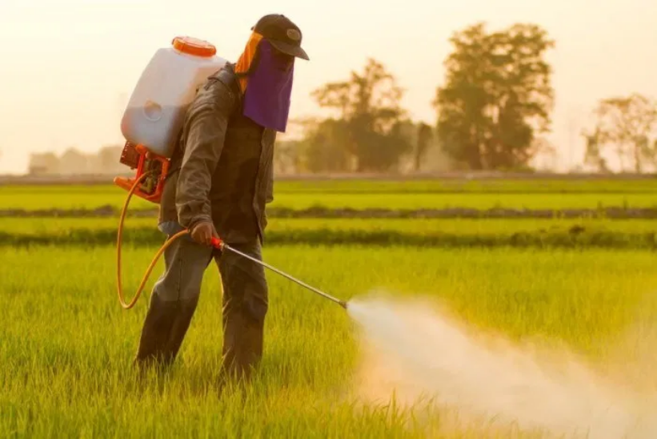

Persiapan Peralatan
Sebagai langkah pertama dalam bertani, tentu kita memerlukan peralatan yang memadai. Tanpa adanya peralatan yang memadai dalam bercocok tanam, tentu akan sangat sulit bagi kita untuk mendapatkan hasil yang maksimal dalam melakukan usaha kita.
Maka dari itu, BelajarTani.id akan mengenalkan terlebih dahulu 3 peralatan yang wajib dimiliki oleh seorang petani, serta alternative peralatan lain yang dapat digunakan untuk mendapatkan hasil yang sama.
1. Cangkul
Cangkul adalah alat yang wajib dimiliki dalam membajak sawah. Cangkul berguna dalam berbagai aspek dalam bertani, mulai dari penggemburan tanah, membantu petani dalam mengontrol lahan, serta juga digunakan sebagai alat untuk mengusir hama. Dengan cangkul yang baik, anda akan merasa terbantu.
Alternatif lain dari cangkul adalah traktor. Bagi pengusaha tani yang besar dengan lahan yang luas, traktor akan menjadi alat yang sangat berguna karena efisiensi dari traktor. Dengan menggunakan traktor, pekerjaan yang seharusnya baru selesai dalam 7 hari dapat diselesaikan dalam 3 hari saja, lho!
2. Alat Semprot Pertanian (spryer)
Spryer adalah alat yang berfungsi untuk memecah suspense atau larutan agar menjadi butiran cair. Mengapa harus dalam bentuk butiran cair yang kecil? Karena hal ini menyesuaikan dengan dosis pestisida atau pupuk yang akan diaplikasikan ke tanaman. Secara umum, ada 2 jenis alat semprot, yaitu sebagai berikut.
Knapsack Spryer
Alat ini adalah salah satu yang paling lazim digunakan. Cara memakai alat ini adalah dengan cara diletakkan di punggung layaknya membawa tas ransel. Cairan di dalam penampung larutan tersebut bisa keluar berkat pompa yang dijalankan oleh tangan dengan gerakan naik-turun.
Motor Spryer
Berbeda dengan knapsack spryer yang cara pakainya adalah dengan digendong, motor spryer dapat difungsikan dengan diletakkan di atas tanah, diangkut menggunakan helicopter, ditarik kendaraan, atau bisa juga ditaruh di punggung. Apabila jangkauan lahan yang hendah disemprot larutan kimia tersebut sangat luas dan ingin selesai dalam waktu singkat, penggunaan motor spryer adalah cara terbaik.
3. Garu
Tahap kedua dalam mengolah tanah dilakukan dengan menggunakan garu. Hasilnya, tanah akan menjadi jauh lebih gembur dan rata, tata kelola air menjadi jauh lebih baik, tanaman liar yang menganggu dan berpotensi merusak hasil pertanian juga hancur.
Terdapat beberapa jenis garu yang biasa digunakan, yaitu Garu sisir, Garu piring, dan Garu paku. Tiap garu memiliki karakteristik masing-masing, dan digunakan dalam lahan yang berbeda-beda.
Demikianlah penjelasan mengenai alat apa saja dalam dunia pertanian yang tergolong tradisional dan modern. Dengan perkembangan teknologi yang semakin canggih, ada banyak pekerjaan petani yang menjadi jauh lebih efektif sehingga hasil panen pun melimpah dan berkualitas baik.